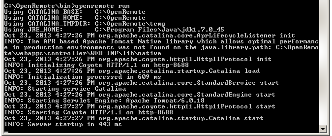
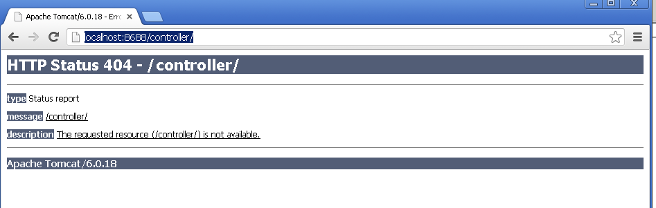

|
This page last changed on Oct 23, 2013 by charbaugh.
I just installed OpenRemote as per the user guides. When I startup the server, here is what is shown

When I go to http://localhost:8688/controller/ (I changed the default port thinking it could be part of the problem), I can the following

I have tried this in both IE and Chrome. Any thoughts?
|
Do you have a folder c:\OpenRemote\webapps\controller?
It looks like the actually controller web application is not deployed inside the tomcat.

Posted by mredeker at Oct 24, 2013 08:57
|
|
Yes
Posted by charbaugh at Oct 24, 2013 11:49
|
|
Somehow this is not deployed. Which version are you using?
Do you see anything in the logfiles within the c:\OpenRemote\log folder?
Posted by mredeker at Oct 24, 2013 12:31
|
|
This is v2.0. I am away from the house now and not able to verify the contents of the log folder, however I do recall looking at it last night. If I remember correctly, there were a number of folders, but only the first one had any files in it. The log file in that folder was just a copy of the cmd screen image I posted previously. I will check again later.
Posted by charbaugh at Oct 24, 2013 13:56
|
|
{kind=link}
{kind=link}